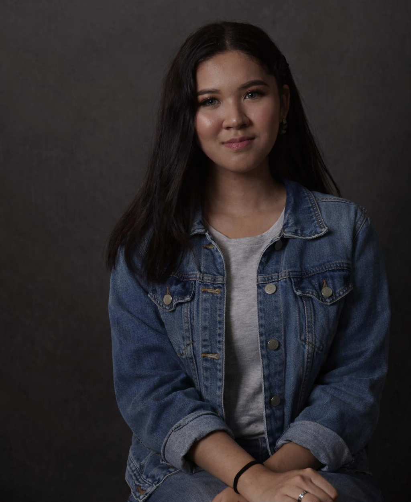

I am an aspiring web developer with a strong passion for creating engaging, unique, and visually appealing websites. Being a bit of an introvert, I find joy in expressing myself through code and design rather than words. I don't give up easily, and when I set my mind on something, I make sure I get it done. I enjoy combining creativity with technology to build experiences that are both functional and beautiful. I believe that great design and clean code go hand in hand in building memorable web experiences.
My professional goal is to become a full-stack web developer who builds meaningful digital products. I aspire to work in a creative and collaborative environment where I can continuously learn and grow. In the future, I hope to contribute to projects that make a positive impact on people's lives through technology. I am committed to improving my craft and earning certifications that will help me achieve my career ambitions.